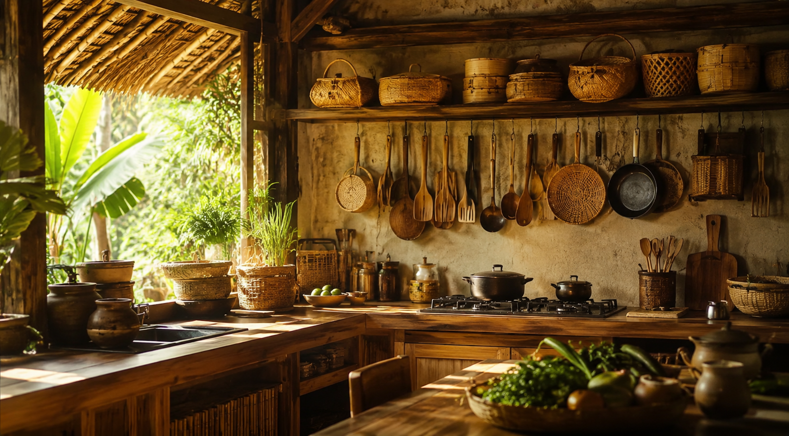

My Food Gallery — And the Solution to Your 'What to Cook' Crisis
Explore CollectionWelcome — this is a little corner of the internet built around a simple love for cooking.
Here, you'll find the dishes I make, how I make them, and the small details that turn a good meal into one worth repeating. Every recipe on this site is something I've actually cooked, tested, and come back to.
You'll also find the Food Finder — a tool born out of a familiar kitchen moment: standing in front of what you have on hand, with no clear idea what to make. Tell it what's in your kitchen, and it'll help you figure out what's possible, so nothing goes to waste and nothing's off-limits just because you didn't plan ahead.
Tell us what you have, and we'll tell you what dish you can make.
Choose one main protein (or select None).
Select all the vegetables you have available.
Select any aromatics and spices you have.
We couldn't find a Filipino dish matching your pantry. Try adding more ingredients.